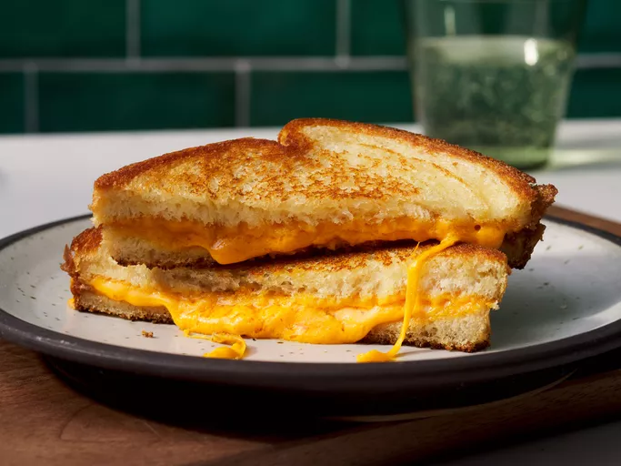

Grilled Cheese

A Golden, Crispy Grilled Cheese sandwich ready to eat!
The Classic Grilled Cheese Sandwich is the ultimate comfort food.
This timeless recipe combiens simple ingredients: sliced white bread, rich American cheese,
and smooth butter, to create a warm, satisfying meal. The secret to its perfection lies in cooking it
slowly over medium heat, allowing the bread to toast to a flawless golden brown while the cheese
inside transforms into a perfectly melted, gooey center.
Whether you are preparing a quick weekday lunch or pairing it with a hot
bowl of tomato soup on a raindy day, this sandwich is a staple that never fails to satisfy. It is
incredibly quick to imake and serves as a wonderful foundation for beginners learning how to balance
heat and timing in the kitchen.
Ingredients:
- 4 slices of white bread
- 3 tablespoons of butter, divided
- 2 slices of American cheese
Directions:
- Preheat a skillet over medium heat.
- Generously butter one side of each slice of bread
- Place two slices of bread, butter-side down, into the heated skillet.
- Top each slice of bread in the skilet with one slice of American cheese.
- Place the remaining slices of bread on top of the cheese, ensuring the butter-side is facing upward
- Grill the sandwiches until the bottom bread turns golden brown, then carefully flip them over.
- Continue grilling until the second side is beautifully browned and the cheese is completely melted.
- Enjoy your delicious Grilled Cheese!
Home